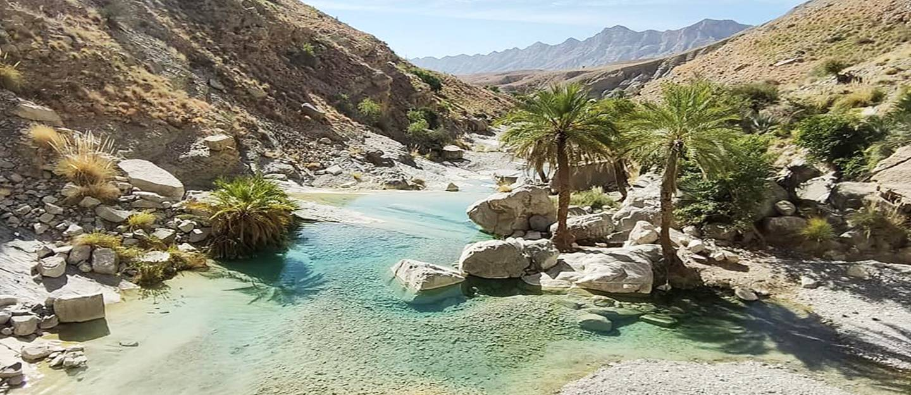

|
Khuzdar:
|
Khuzdar is a city located in the Balochistan province of Pakistan. It is the capital of the Khuzdar District and is situated in the central part of the province. The city serves as an important center for administration, commerce, and education in the region. Khuzdar is surrounded by rugged mountains and is located at an elevation of approximately 1,100 meters (3,600 feet) above sea level. The region is known for its scenic beauty, with the nearby hills and valleys offering picturesque landscapes. The population of Khuzdar consists mainly of Baloch people, who have their distinct culture, traditions, and language. The Balochi language is widely spoken in the area. The city is also home to various ethnic and linguistic communities, adding to its cultural diversity. The city has a number of educational institutions, including Khuzdar University, which contributes to the development of higher education in the region. Agriculture and livestock farming are important economic activities in Khuzdar, with crops like wheat, barley, and dates being cultivated in the surrounding areas. Khuzdar is well connected to other parts of Balochistan and the country through road networks. The National Highway N-25 passes through the city, connecting it to Quetta, the provincial capital, and other major cities in Pakistan. The surrounding areas of Khuzdar are rich in natural resources, including minerals like coal, chromite, and copper. The region is also known for its archaeological sites, with ancient ruins and rock carvings found in the vicinity. Khuzdar hosts various cultural and traditional events, providing opportunities for locals and visitors to experience the vibrant Balochi culture. The city's bazaars offer a range of handicrafts and local products, showcasing the craftsmanship of the region. |
 |